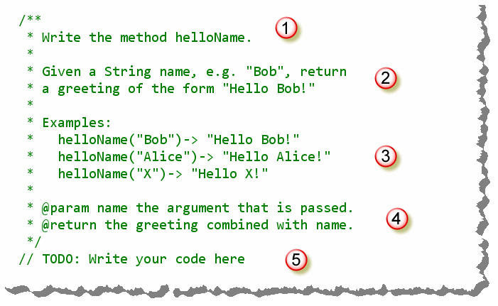
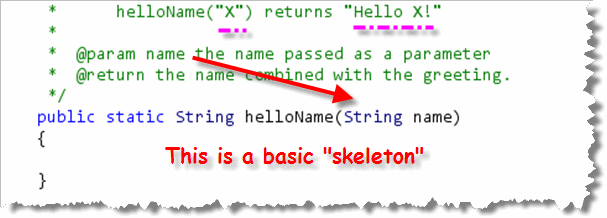
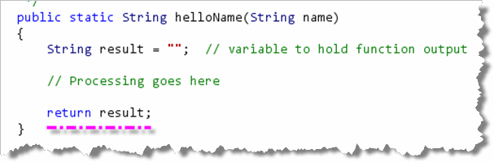
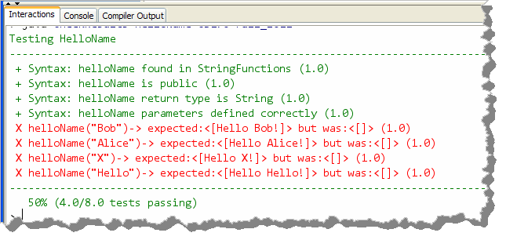
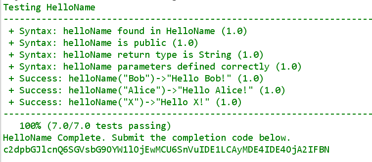

Now, it's your turn to get some practice writing your
own methods. You'll want to start getting into
shape for the programming exams, right?
Now, it's your turn to get some practice writing your
own methods. You'll want to start getting into
shape for the programming exams, right?
Writing helloName
In DrJava, open the file HelloName.java, which you'll find
in the Week02 folder, and we'll take a look at our first
method exercise.
As you can see, there is not much in the class except
for a Javadoc comment providing the documentation for
the method that I want you to write.
The first one of these is the helloName
problem, which is the simplest string method exercise
that I could come up with.:

For each method problem you're given, you'll find:- The name of the method you are supposed to write.
In this case, you are writing a method named
helloName. - You'll be given some brief instructions about what the method should calculate. In this example, the method combines the name (passed as a parameter) with a greeting, and returns the whole thing.
- One of the most useful pieces of information you'll get is a set of examples. The examples will show different input and the expected output for those inputs.
- Every method problem will also provide Javadoc tags
for all the parameters (one
@paramtag for each parameter, in the order they are used), and an@returntag for the method. Usually, the description and examples are more useful for me. - Finally, you'll see a comment line that says something
like
//TODO WRITE YOUR CODE HERE. Replace that line with the header for your method.
Start With the Skeleton
Always start by writing the "skeleton" for your method. You want to make sure that your code starts out syntactically correct, and then stays that way. As a side benefit, often a bare-bones syntactically correct method skeleton will actually pass some of the final tests, so you're sure to get some points, even if you don't know how to completely finish a problem.
For a method, the first step towards writing a skeleton or "stub" is
to combine the return type, name, and parameters to write the header
and then add some braces to make the body. Here's an example:

Notice that:
- We got the return type by looking at the example
and the
@returnJavadoc tag. - We got the method name by looking at the first line in the problem definition as well as the examples. Make sure you spell the name exactly correct.
- We got the parameter name and type by looking
at both the example and the Javadoc
@paramtag.
NOTE: make sure that your methods are public. If
you forget to add the public then I won't be able
to test your code.
Complete the Skeleton
Notice that if you compile at this point, DrJava will tell you
that your method skeleton is actually
syntactically incorrect.
 That's because we are missing the
That's because we are missing the
return statement that every method
must have.
Here's how to write the "first-cut", "no-thought" return
statement, just to get your code to compile and test.
- Create a local variable, of the same type as
the method return type. I usually name this
result. In this example,helloNamehas a return type ofString, so your first line should look like this:
 I usually initialize the
I usually initialize the resultsvariable to the "empty" value for the type:"",0, orfalse. - Now, at the very end of your method, just add
return result;. This makes your method syntactically correct, so that it compiles and can be tested.

Informal Testing
Obviously, the helloName() method doesn't yet
do what it's supposed to do, since it only returns the empty
String, instead of a greeting. Once you've added the
code to construct the greeting, though, how will you know if you've
done it correctly?
Good question! You can, of course, call the function from
your main() method. The fastest way, though,
to try out the method is to use the interactions pane,
like this:
 Notice that in the Interactions Pane you can:
Notice that in the Interactions Pane you can:
- Call the method directly (after you've compiled, of course)
by using the name of the class that contains it (like you
would with the methods in the
Mathclass. - You can add a
static importline, like the one I've shown here, so that you can then call the methods without needing the class name in front of the methods. - Finally, when you do call the method, don't use a semicolon, and the DrJava Interactions Pane will print out the returned value for you to see.
When you do this, you can then compare the result printed with the expected returned value supplied in the comment for the method.
Using Check
While you're free to use the DrJava Interactions Pane for ad-hoc informal testing, you'll want to run the Check program that I've supplied, for more extensive (and actually easier) testing.
Here's the output running Check on our helloName()
skeleton:

As you can see, half of the tests pass because the testing program is able to find and run the method (so it is syntactically correct). If your program is syntactically correct, the tests that check syntax do pass at this point, even though you haven't added any logic to your method yet. Of course none of the correctness tests pass yet. Note that although the method that we are testing is named
helloName() (starting with a lowercase letter,
like the standard Java conventions recommend), the test program
will always start with a capital letter. Please
don't start your methods with a capital though.
Remember, your method must be syntactically correct before it can be tested. Unless your program compiles without errors, the test program will not be able to run it. The easiest way to do that is to practice writing method skeletons, like the one I've shown you here, until it just becomes second nature.
Finish Up helloName
After all this work, actually finishing helloName is
kind of anticlimactic. Remember that the purpose of a method is
to transform inputs into output. In our case, we have one input,
the String parameter name, and one
output, the String variable result.
We can use simple concatenation to combine name
and a greeting, to produce the results specified by the problem
description like this:
 Run Check after making these changes and you'll see that
all of the tests now pass:
Run Check after making these changes and you'll see that
all of the tests now pass:
